Limpieza de datos con OpenRefine
Resumen
Para esta práctica utilizaremos la herramienta OpenRefine que instalamos en la clase anterior.
Se puede descargar desde http://openrefine.org/ y corre en cualquier versión de sistema operativo. Cuando se ejecuta la herramienta abre una ventana de la línea de comandos y el explorador de internet por defecto, que es donde se usa la herramienta.
OpenRefine se define como una herramienta libre y abierta para trabajar con datos llenos de problemas.
Caso: Lectores del suplemento Horizonte Agropecuario
La editorial que imprime y distribuye el suplemento Horizonte Agropecuario, dispone su lista de lectores en una planilla Lectores.xlsx, la que utiliza para imprimir las etiquetas que luego son utilizadas en el franqueo de los envíos, en la misma a lo largo del tiempo se le han ido agregando filas únicamente. Cada fila se agrega al principio del listado por lo que no se controla si figura o no el destinatario en la lista. Solo se tiene en cuenta el código postal que se encuentra en otra hoja de la planilla para la carga del mismo, junto con la dirección y el nombre del destinatario.
La estructura de los datos son dos tablas con los siguientes campos:
Primer ejercicio: conociendo los datos y entrando a OpenRefine
Duracion: 5 minutos.
Descargar el archivo Lectores.xlsx del campus
Abrir la planilla de Excel descargada y realizar una vista rápida de los datos. ¿Pueden encontrar algunos problemas de consistencia?. Hagan un listado de los problemas que encuentren en los datos.
Toda la edición de los datos se realizará con la herramienta Open Refine, que realiza una importación de los datos y nos permite dejar el archivo original intacto cumpliendo una de las buenas prácticas del manejo de datos.
- Ejecutar Open Refine haciendo doble clic sobre el icono del diamante. Se debe abrir un ventana de comandos en la que se ejecuta OpenRefine. De forma predeterminada, la ventana de comandos tiene un fondo negro, similar a la siguiente figura.
- Además se abrirá el explorador de internet que esté configurado por defecto. Dentro de la pagina en el explorador sobre el lado izquierdo hay un grupo de solapas: Crear Proyecto, Abrir Proyecto, Importar Proyecto e Idioma. Si al ejecutar el programa no aparece en la versión en español, ingresando en la solapa "Language Settings" y configurar la opción "Español".
- Por defecto la herramienta se encuentra en la solapa "Crear Proyecto", donde da una serie de alternativas para importar datos a OpenRefine, para esta práctica utilizaremos "Este Equipo"
Segundo ejercicio: conformación del set de datos Lectores.
Duracion: 5 minutos.
- Dentro de la solapa "Crear Proyecto", en la opción "Este Equipo", hacer clic en el botón "Examinar" y buscar el archivo "Lectores.xlsx" descargado del aula virtual.
Una vez encontrado el archivo, seleccionar y presionar el botón "Siguiente >>". De esta forma pasa a la pantalla de preparación de la importación de los datos.
Seleccionar en "Hojas a Importar", la hoja "Datos". Configurar las siguientes opciones, marcar la opción "Ignorar primeras", colocar el número 6 en líneas al inicio del archivo. Por defecto aparece seleccionada la opción "Seleccionar Primeras" la cual no hay que modificar.
Sobre la esquina superior izquierda del cuadro editar el nombre del proyecto a "Lectores" y hacer clic en crear proyecto.
La siguiente pantalla es donde se lleva a cabo toda la manipulación de los datos. Observar que al lado de cada nombre de columna, se dispone de un botón en forma de flecha () donde se encuentran todas las opciones para manipular los datos de cada una de ellas.
Tercer Ejercicio: Limpieza del conjunto de datos.
Duracion: 20 minutos.
- El primer paso es eliminar las columnas sobrantes o sin datos, para ello hay que hacer clic en la flecha a la derecha de la columna "Todo", seleccionar la opción "Ordenar/Eliminar Columnas…" del menú "Editar Columnas".
- A continuación en la ventana abierta para la edición de las columnas, arrastrar las columnas que se desean eliminar al panel de la derecha y en caso de querer alterar el orden de las columnas con datos se puede hacer dentro del mismo panel.
- Una vez que la planilla este con el formato deseado proceder a identificar valores de lectores similares y corregirlos, para ello sobre la columna de "Nombre" seleccionar del menú "Editar Celdas" la opción "Agrupar y editar…"
- Dentro de la ventana que se despliega, observar que automáticamente la herramienta identifica los "Nombres" similares y los agrupa para su edición, la misma se realizará si se selecciona la opción "¿Unir?", en el cuadro de texto de la izquierda de cada grupo se podrá editar el contenido final de las celdas que se unan. Por último y luego de hacer todos los cambios deseados, hacer clic en "Unir seleccionados y Cerrar".
- Ahora vamos a eliminar todos los registros que no cuenten con "Codigo Postal" ya que sin ese dato no se puede identificar a qué localidad pertenece el "Lector": En la columna "Codigo Postal", seleccionar del menú "Facetas", el submenú "Facetas personalizadas" opción "Facetas por blanco".
- Esto mostrará en el panel de la izquierda las opciones "true" y "false", seleccionar la opción "true" para ver todos los registros que no cuenten con este dato.
- Luego en la columna "Todo", seleccionar el menú "Editar filas" opción "Eliminar todas las filas que encajen". De esta forma se eliminaran todas las filas sin "Código postal".

- Por último vamos a identificar los registros duplicados, en cada columna del set de datos seleccionar del submenú "Facetas personalizadas" del menú "Facetas", la opción "Faceta por duplicados".
- De esta forma irá apareciendo en el panel de la izquierda dos opciones "true" y "false" para cada una, al finalizar la misma operación para todas las columnas, seleccionar la opción "true" de cada una de las ventanas del panel de la izquierda.
- Ahora en la columna "Codigo Postal" seleccionar la opción "Ordenar…", en la ventana emergente seleccionar "números" y "Aceptar" de esta forma nos quedan los registros duplicados por localidad.
- Aparece la palabra "Sort" sobre la fila de los nombre de columnas, seleccionar y elegir la opción "Ordenar filas permanentemente" así fijamos el orden dado. De esta forma podremos identificar los registros que realmente sean duplicados, marcar con una estrella y luego seleccionar el filtro por estrellas: menú "Facetas" opción "Facetas con estrellas". Luego en la columna "Todo", seleccionar el menú "Editar filas" opción "Eliminar todas las filas que encajen".
Cuarto Ejercicio: limpiar los datos de las Localidades
Duracion: 20 minutos
Vamos a generar un nuevo proyecto y vamos a importar nuevamente el set de datos Lectores, pero en esta ocasión, seleccionaremos la hoja de Localidades. Al proyecto le pondremos de nombre Localidades.
Como siguiente paso seleccionamos la columna Provincia -> Facetas -> Facetas por Texto.
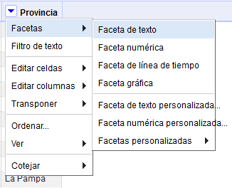
- Nos aparece a la izquierda un panel con todos los textos diferentes que tiene esa columna y podemos ver que hay nombres de una misma provincia escrito de manera diferente. Para cambiarlos a todos juntos seleccionamos editar y ponemos el valor correcto. La herramienta cambiará todos estos casos juntos.
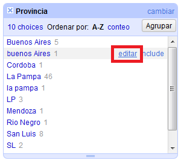
- Realizar similar tarea con los datos de "Localidad", seleccionar la opción "Faceta de texto" del menú "Facetas", aparece en el panel de la izquierda otra ventana, ahora con los nombres de las localidades agrupados por cantidad de apariciones. Para la edición de la misma se podrá utilizar el filtro de provincias, de esta forma se evitará eliminar localidad con el mismo nombre pero de diferentes "Provincias".
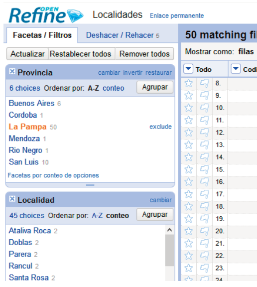
Después de realizar todas estas modificaciones, ordenar de nuevo: seleccionar en la columna "Provincia" la opción "Ordenar…", hacer lo mismo con "Localidad" de esta forma quedan en filas consecutivas las filas duplicadas. Para poder eliminar las filas duplicadas debemos:
Seleccionar la palabras "Sort" sobre los nombres de las columnas y luego la opción "Reordenar filas permanentemente".
Seleccionar en la columna "Localidad" la opción "Vaciar hacia abajo" del menú "Editar celdas". Así se borran los datos de Localidad duplicados.
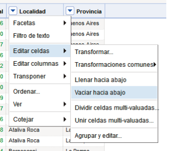
Para eliminar las filas con celdas vacías en la columna "Localidad", seleccionar Facetas -> Facetas personalizadas -> Faceta por blanco"
Esto muestra en el panel de la izquierda las opciones "true" y "false" para "Localidad", seleccionar "true" y así se muestran todas las filas sin dato de "Localidad". En la columna "Todo" seleccionar "Eliminar todas las filas que encajan" del menú "Editar filas"
Como último paso para cerrar la edición de este set de datos, cerrar todas las ventanas en el panel de la izquierda. De esta forma aparecerán los datos que quedaron. Observar que siguen existiendo datos duplicados,
Esta última edición la realizaremos marcando los registros repetidos que visualmente encontremos. Para ello en la columna "Localidad" seleccionar la opción "Faceta de texto" en el menú "Facetas", vemos que el panel de las izquierda nos muestra nuevamente las localidades dentro de las que vemos algunas con 2 apariciones, ordenamos por "conteo" y seleccionar con la opción "include" de cada renglón las que tengan más de una aparición. Ahora con el listado de las repetidas marcar con una estrella los registros a eliminar.
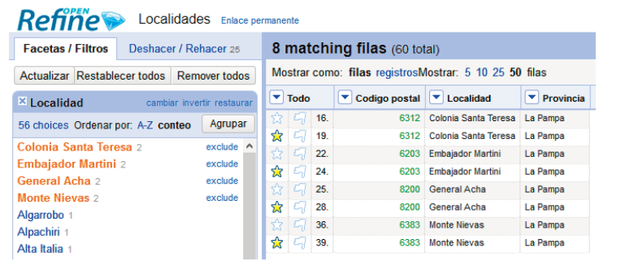
- Seleccionar en la columna "Todo", la opción "Faceta por estrellas" en el menú "Facetas", aparece la ventana en el panel izquierdo, con las opciones "true" y "false", seleccionar "true" en dicha ventana. Luego seleccionar la opción "Eliminar todas las filas que encajan" del menú "Editar filas" de la columna "Todo". Cerramos nuevamente todas las ventanas del panel izquierdo
Quinto Ejercicio: Unificar los set de datos de Lectores con Localidades.
Duracion: 15 minutos.
- Para comenzar con la última parte de la consolidación de los datos del caso de estudio abrir nuevamente el set de datos Lectores, con el botón "Abrir…" que se encuentra en el rincón superior derecho.
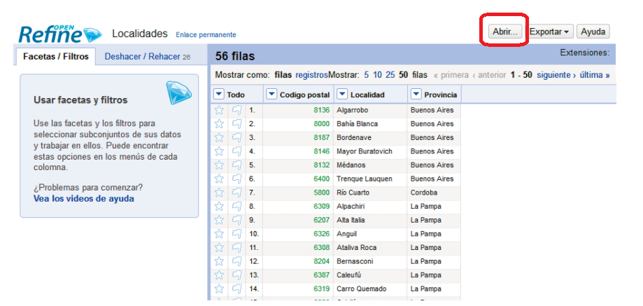
Hacer click en la solapa de la izquierda "Abrir proyecto", esto nos muestra todos los proyectos que se generaron. Seleccionar el proyecto "Lectores" para abrirlo nuevamente.
Ahora agregar nuevas columnas "Localidad" y "Provincia" al proyecto actual desde el proyecto "Localidades". Para esto usaremos la opción "Agregar columna basada en esta columna…" en el menú "Editar columnas" de la columna "Codigo Postal"
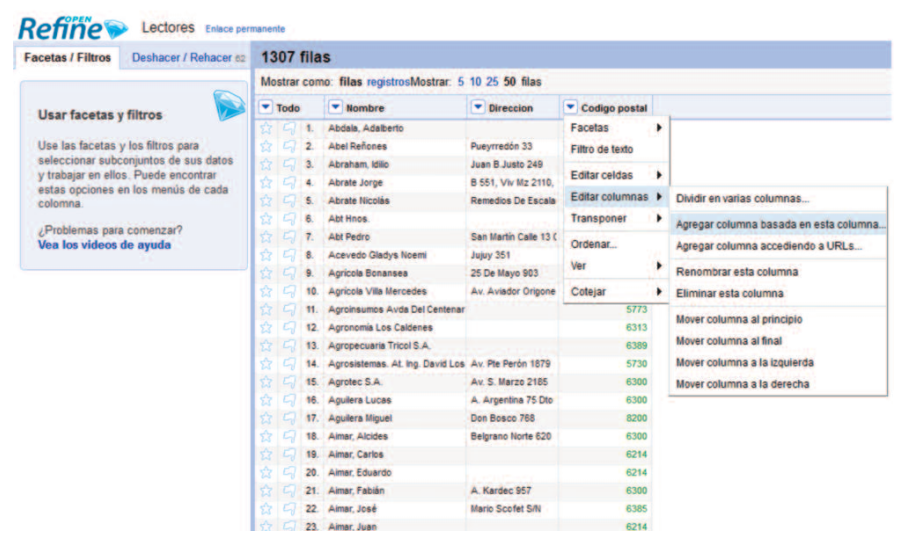
- Al seleccionar esta opción se abre una ventana emergente en donde configurar opciones que nos va a permitir agregar nuevas columnas. Dentro de las configuraciones, completar el nombre de la nueva columna, en el primer caso sería "Localidad", dejar seleccionado "cambiar a en blanco", el lenguaje a utilizar será "GREL" como está configurado y en el cuadro "Expresión" completar con la expresión:
cell.cross("Localidades","Codigo postal").cells\["Localidad"\].value\[0\]
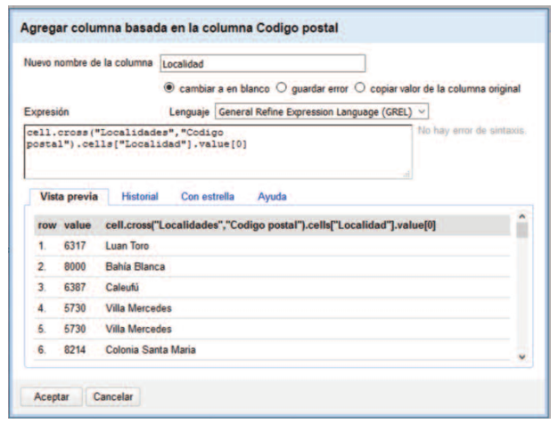
- En el cuadro inferior se muestra una vista previa de la columna agregada. Realizar la misma secuencia para agregar la columna de "Provincia", también basada en el "Codigo postal". La expresión que se debe utilizar para la nueva columna es la siguiente:
cell.cross("Localidades","Codigo postal").cells\["Provincia"\].value\[0\]
- Como así también se debe tener en cuenta que el nombre de la columna debe ser "Provincia". Luego de estos pasos contamos con el listado de lectores sin duplicados y con el dato de Localidad y Provincia.
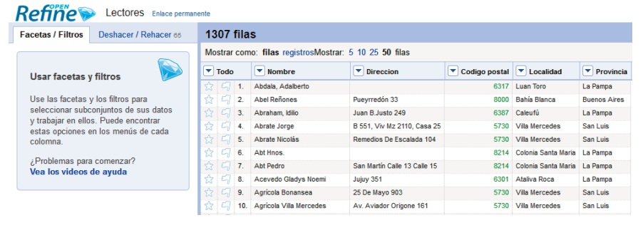
Sexto Ejercicio: Registro de todos los cambios realizados
Duracion: 5 minutos.
Open Refine lleva un registro de todos los cambios y acciones que realizamos sobre los datos trabajados en el proyecto. Si es necesario volver algún paso atrás o tener el historial de acciones realizadas sobre los datos, la herramienta los documenta por nosotros. Se pueden ver haciendo clic sobre la opción Deshacer/Rehacer:
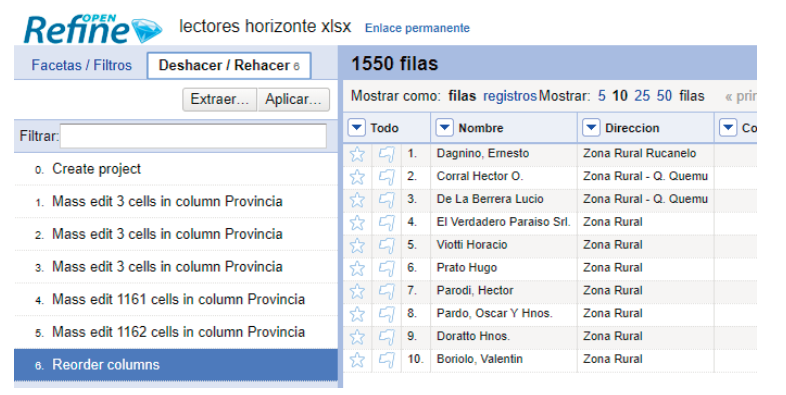
Septimo Ejercicio: guardando los datos trabajados
Duracion: 5 minutos.
- Para finalizar y obtener un archivo con los datos ya limpios y trabajados como necesitamos debemos hacer clic en "Exportar" y allí seleccionar el formato que más nos convenga.
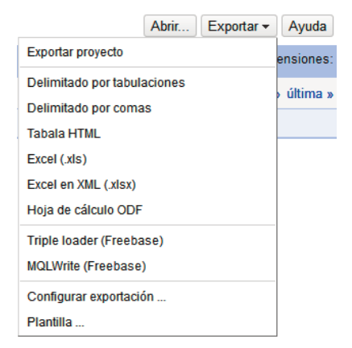
- Hacer clic en el botón "Exportar" que se encuentra en la esquina superior derecha de la pantalla, allí visualizar todas las opciones de exportación junto con los formatos en los que se pueden exportar los datos, en este caso vamos a seleccionar el formato "Excel en XML (.xlsx)". Al seleccionar la opción se abrirá otra ventana en el explorador:
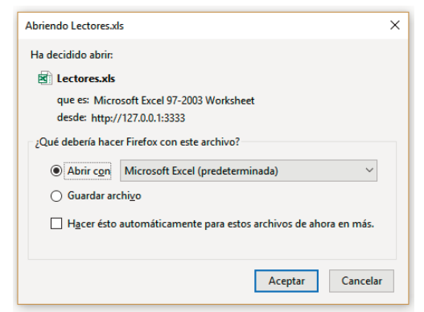
- En esta nueva ventana seleccionar la opción "Guardar como" asi poder elegir la ubicación del archivo final.